외식 프랜차이즈부터 제조·물류까지, 에코플랜과 함께하는 파트너사
대형 뷔페·외식 프랜차이즈부터 포장재 제조·가구 물류 브랜드까지, 에코플랜의 체계적인 3W·IPM 공간케어와 함께하는 15개 공식 파트너사와 프랜차이즈 통합관리 프로그램을 소개합니다.
함께하는 프랜차이즈 & 기업 파트너 (15곳)
에코플랜 공식 사이트에 등록된 파트너사 포스터와 업종별 중점 위생관리 영역입니다.
| 업종 분류 | 주요 파트너사 브랜드 | 중점 위생·방제 관리 영역 및 적용 솔루션 |
|---|---|---|
| 대형 뷔페 · 샤브 · 가족 외식 | 쿠우쿠우, 삼청동샤브가든, 고기굽는정원 | 대형 홀·샐러드바·조리실·식기세척실·그리스트랩 구역 분리 진단, 독먹이 로테이션 및 UV LED/BL램프 포충기 동선 설계 |
| 면류 · 중식 · 한식 · 육류 프랜차이즈 | 홍콩반점, 153구포국수, 완미족발, 갈비명가궁, 육회로, 도라보울, 이가네양꼬치, 이용성국수맛집, 구름산추어탕, 청정화푸드 | 고온 주방 화구·육수 조리 열원·배수 트렌치·식자재 입고 박스의 독일바퀴·나방파리·초파리·쥐 3W 집중 케어 |
| 포장재 · 산업 제조시설 | (주)트루맨엠앤엘 | 비닐·맞춤형 포장재 제조 라인 비래해충 유입 차단, 포충기 포획 모니터링 및 제품 이물혼입 예방 관리 |
| 가구 · 리빙 · 물류 유통 | (주)티오피퍼니쳐 | 전시장·목재/원자재 보관 창고·하역장 입출고 동선의 외곽 설치류 디펜스라인 및 고습도·침입 해충 관리 |
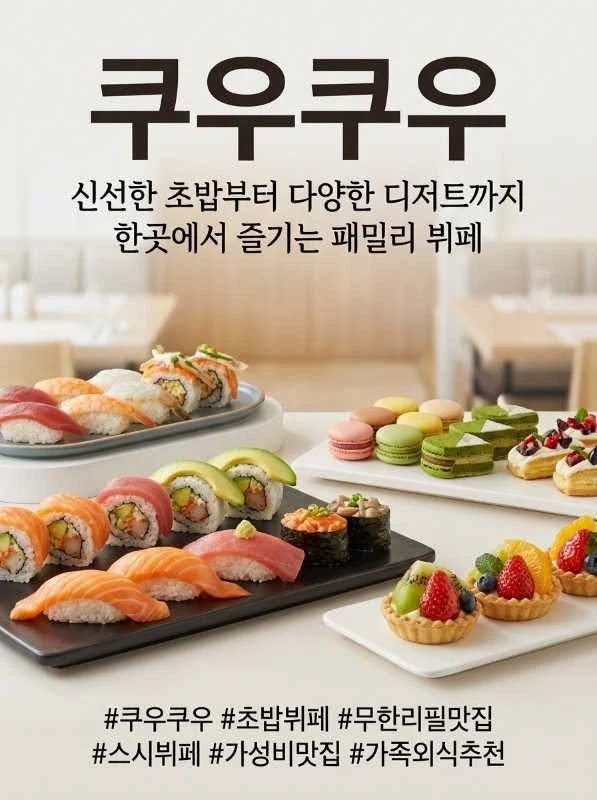
쿠우쿠우
신선한 초밥부터 다양한 디저트까지 한곳에서 즐기는 패밀리 뷔페
쿠우쿠우 공식 안내 ↗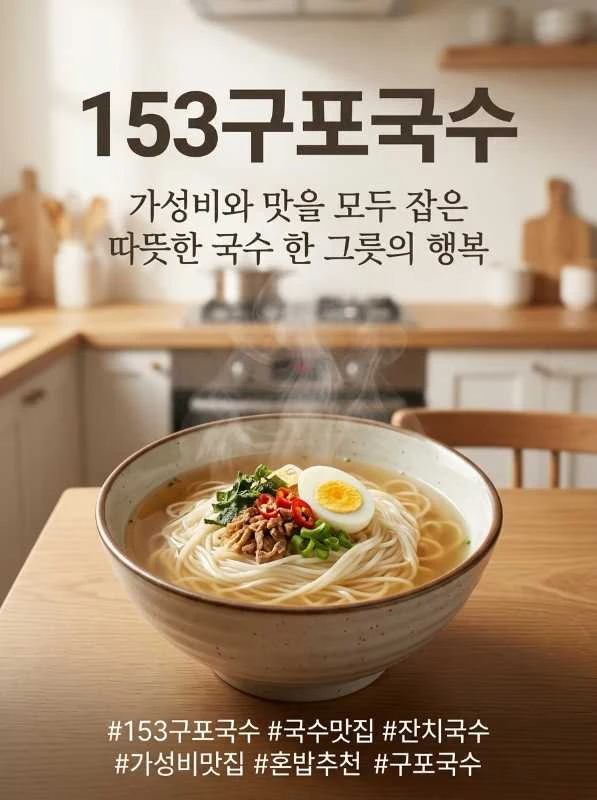
153구포국수
가성비와 맛을 모두 잡은 따뜻한 국수 한 그릇의 행복
153구포국수 공식 안내 ↗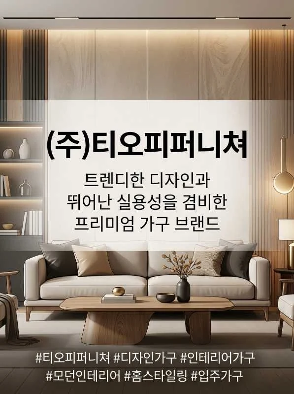
(주)티오피퍼니쳐
트렌디한 디자인과 뛰어난 실용성을 겸비한 프리미엄 가구 브랜드
(주)티오피퍼니쳐 공식 안내 ↗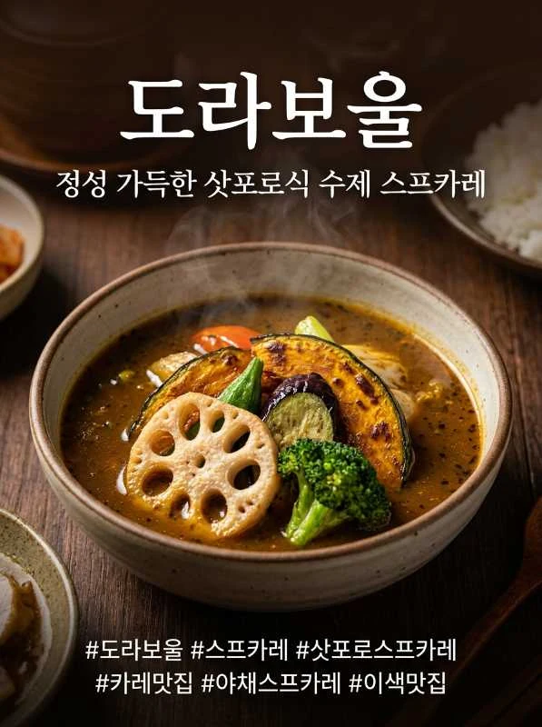
도라보울
삿포로 수프카레 맛집 도라보울
도라보울 공식 안내 ↗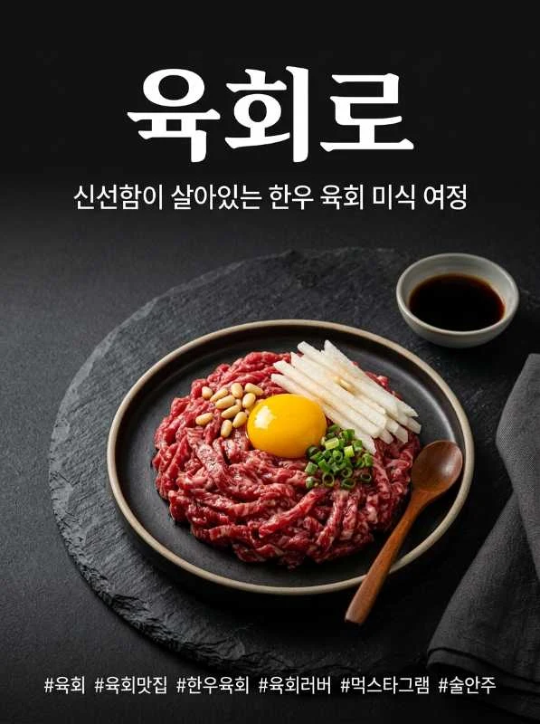
육회로
신선함이 살아있는 한우 육회 미식 여정
육회로 공식 안내 ↗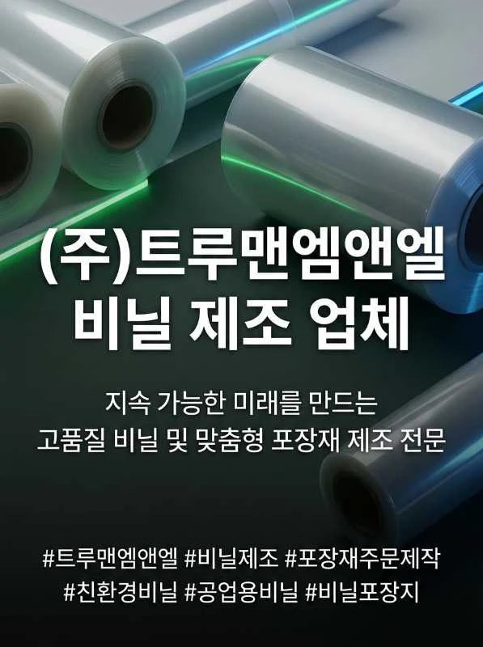
(주)트루맨엠앤엘
지속 가능한 미래를 만드는 고품질 비닐 및 맞춤형 포장재 제조 전문
(주)트루맨엠앤엘 공식 안내 ↗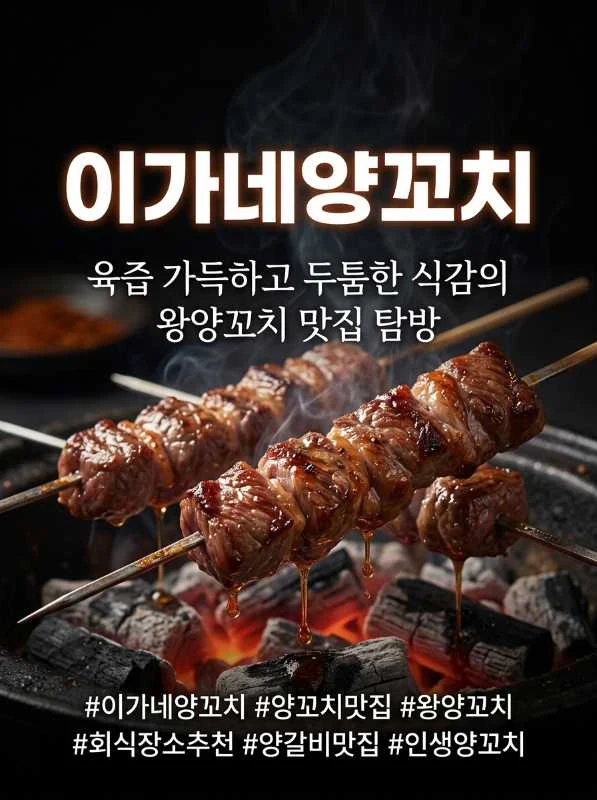
이가네양꼬치
육즙 가득하고 두툼한 식감의 왕양꼬치 맛집 탐방
이가네양꼬치 공식 안내 ↗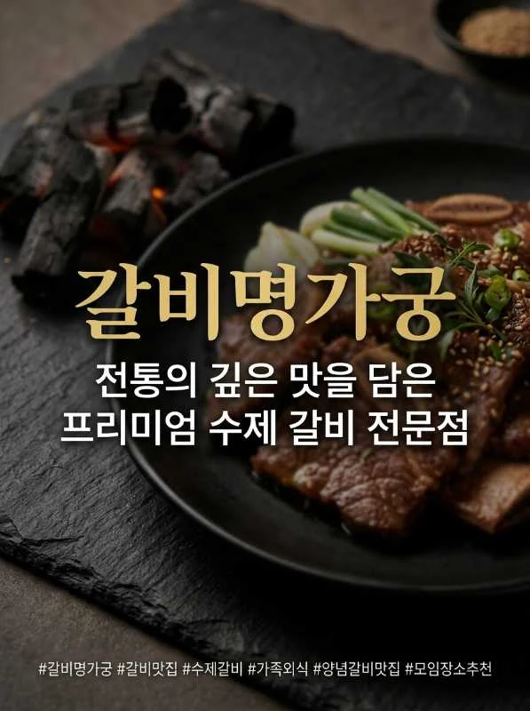
갈비명가궁
전통의 깊은 맛을 담은 프리미엄 수제 갈비 전문점
갈비명가궁 공식 안내 ↗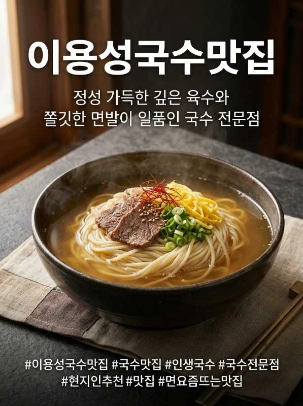
이용성국수맛집
정성 가득한 깊은 육수와 쫄깃한 면발이 일품인 국수 전문점
이용성국수맛집 공식 안내 ↗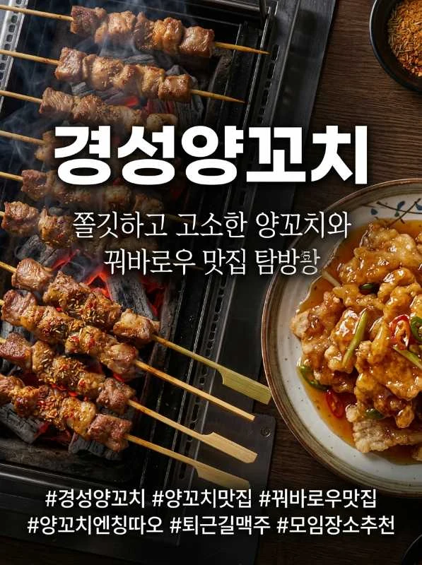
경성양꼬치
쫄깃하고 고소한 양꼬치와 꿔바로우 맛집 탐방
경성양꼬치 공식 안내 ↗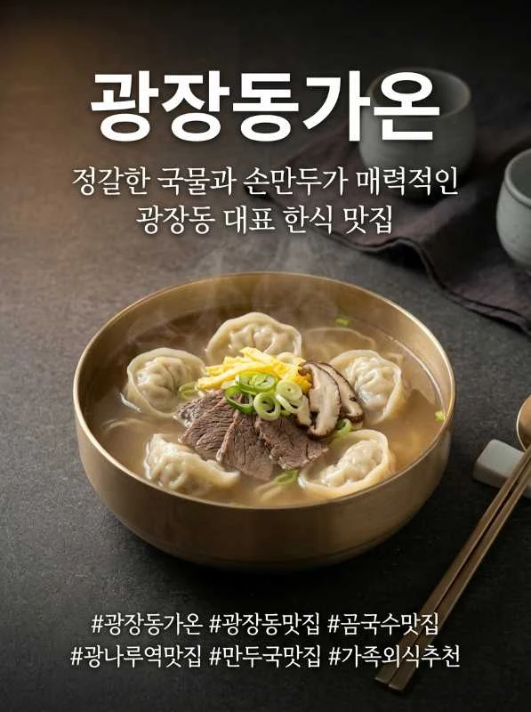
광장동가온
정갈한 국물과 손만두가 매력적인 광장동 대표 한식 맛집
광장동가온 공식 안내 ↗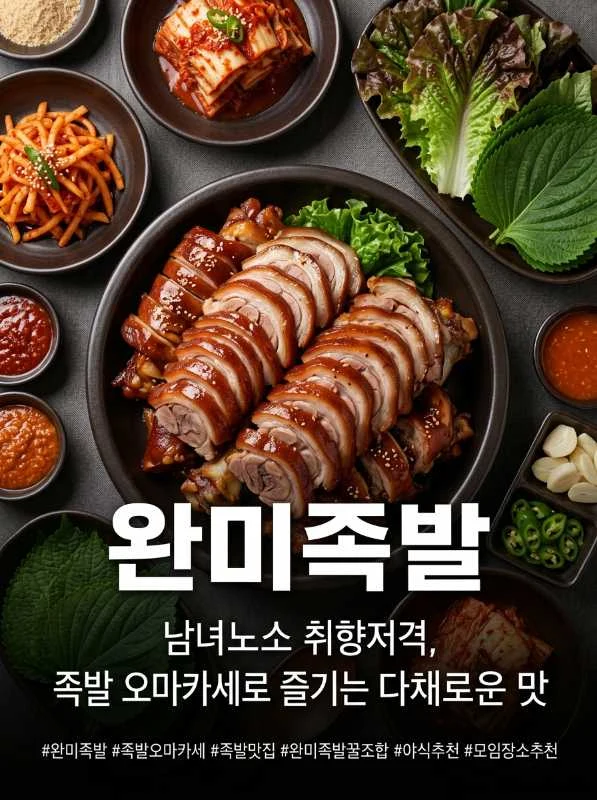
완미족발
남녀노소 취향저격, 족발 오마카세로 즐기는 다채로운 맛
완미족발 공식 안내 ↗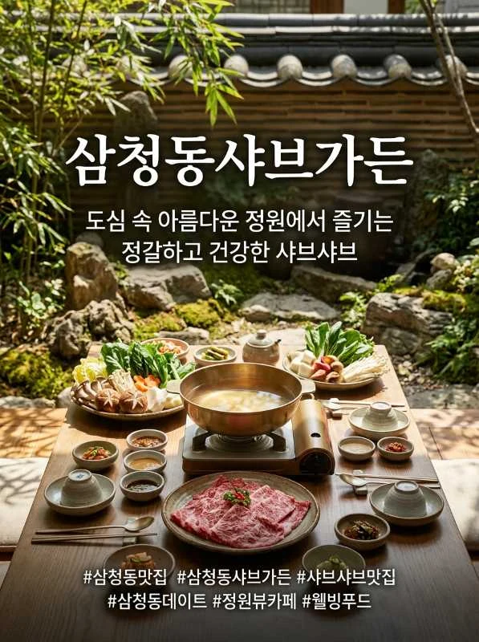
삼청동샤브가든
도심 속 아름다운 정원에서 즐기는 정갈하고 건강한 샤브샤브
삼청동샤브가든 공식 안내 ↗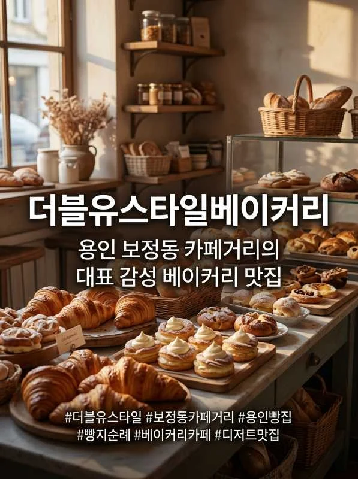
더블유스타일베이커리
용인 보정동 카페거리의 대표 감성 베이커리 맛집
더블유스타일베이커리 공식 안내 ↗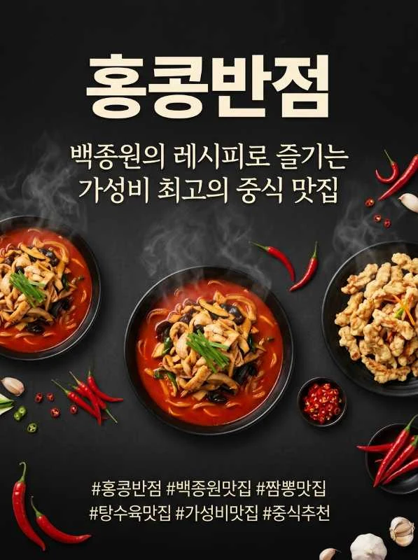
홍콩반점
백종원의 레시피로 즐기는 가성비 최고의 중식 맛집
홍콩반점 공식 안내 ↗프랜차이즈 본사 · 가맹점 통합 위생관리 프로그램
본사 품질관리(QA)·슈퍼바이저 팀과 가맹점주 모두를 위한 4단계 표준 공간케어 체계입니다.
01. 신규 오픈 매장 사전 방충·방서 설계
인테리어 마감·설비 반입 단계에서 배관 관통부, 출입문 유격, 그리스트랩 구조와 포충기 최적 설치 위치를 사전 진단해 오픈 초기 해충 유입을 예방합니다.
02. 전 가맹점 표준 3W·IPM 프로토콜
매장마다 들쭉날쭉한 소독 대신, 브랜드 조리 특성에 맞춘 표준 약제 로테이션과 구역별 트랩 점검 기준을 동일하게 적용합니다.
03. 이물·클레임 신속 분석 및 리포트
조리·배달·유통 과정에서 해충 이물 문의가 접수되면 해충 동정, 카탈라제 효소 반응 실험, 현장 DB 대조를 통해 객관적 원인 규명과 재발 방지를 지원합니다.
파트너사·프랜차이즈 통합관리 자주 묻는 질문
프랜차이즈 본사에서 전국 또는 다수 가맹점의 위생·해충관리를 통합 의뢰할 수 있나요?
네, 쿠우쿠우·홍콩반점·153구포국수·삼청동샤브가든·완미족발 등 다양한 외식·유통 브랜드 관리 경험을 바탕으로, 본사 슈퍼바이저 기준에 맞춘 가맹점 표준 3W·IPM 매뉴얼, 신규 출점 매장 사전 방충·방서 설계, 지점별 정기 점검 리포트 및 클레임·이물 긴급 대응을 지원합니다.
외식 매장 외에 일반 제조공장이나 가구·물류창고도 파트너 관리가 가능한가요?
네, (주)트루맨엠앤엘(비닐·포장재 제조), (주)티오피퍼니쳐(가구·리빙 물류) 등 제조·유통 파트너사와 같이 생산 라인 포충기 모니터링, 원료·완제품 창고 저곡해충 관리, 하역장 외곽 방서 디펜스라인 구축을 업종 특성에 맞춰 수행합니다.
• 작성·검토 주체: 주식회사 한국에코플랜 기술연구소 · 위해생물방제사 기술지원팀 (대표 김영태 · 고객센터 1688-4587)
• 최초 구성일: | 최종 개정·검수일:
• 참고 법령 및 1차 공공 기준: 환경부 초록누리(살생물제 승인기준) ↗ · 질병관리청 감염병 매개체 종합방제(IPM) 지침 ↗ · 한국식품안전관리인증원(HACCP 방충·방서 기준) ↗ · 감염병예방법 소독기준 ↗
• 공식 채널 확인: 에코플랜 공식 도메인(ecoplan.co.kr) ↗ · 스마트캐치 공식 네이버 스마트스토어 ↗ · 현장 맞춤 상담 신청